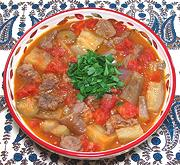

|
Lamb & Eggplant StewLebanon - Mnazlit al-Batinjan | ||||
| Serves: Effort: Sched: DoAhead: |
4 main *** 2 hrs Yes |
A very nice stew, with just enough meat to balance the vegetables. It is easy to make, except for cutting lamb meat free from the bones and fat (see Note-1). | |||
|
|
1 1-1/2 1-1/4 8 5 1-1/2 3/4 1 1/3 ------- ar ar |
# # # oz T c t t --- |
Lamb Meat (1) Tomatoes Eggplants (2) Onions Allspice Oil Water Salt Pepper, black -- Serve with Rice -or- Vermicelli Rice |
If you are making ahead and will reheat it, take it off the heat a little before the Eggplants are completely done. Prep - ( 45 min)
|